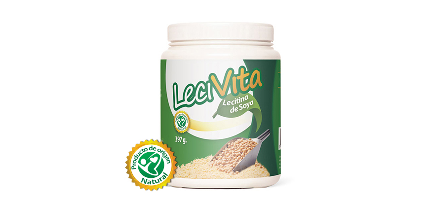

Controla las grasas


Una de cada cinco personas sufre de altos índices de colesterol y/o triglicéridos asociado a una dieta compuesta por grasas dañinas. Para prevenir ello, tradicionalmente, se ha utilizado la lecitina de soya como un tratamiento natural para el colesterol alto.
Lecitina de soya que ayuda a reducir los niveles de colesterol y triglicéridos
BLecivita es lecitina de soya granulada que brinda los siguientes beneficios:
- Reduce los niveles de colesterol malo y triglicéridos mejorando la circulación de la sangre.
- Ayuda al buen funcionamiento del hígado.
- Favorece al desarrollo mental y el buen funcionamiento cognitivo.
Presentación:
Pote de 397 gramos, sabor característico.
Rendimiento y uso:
Dos meses, consumiendo 1 cucharada (7 gramos) en cualquier momento del día en una bebida fría o caliente.
¡Tómalo a diario y disfruta de todos sus beneficios!
